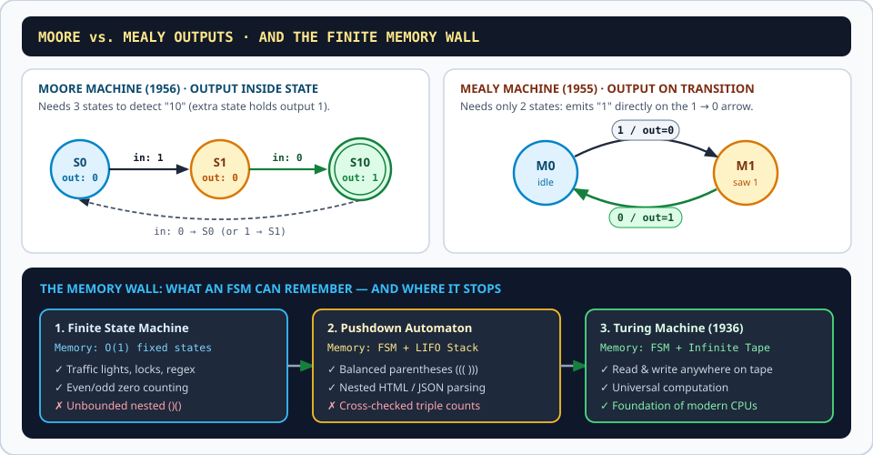
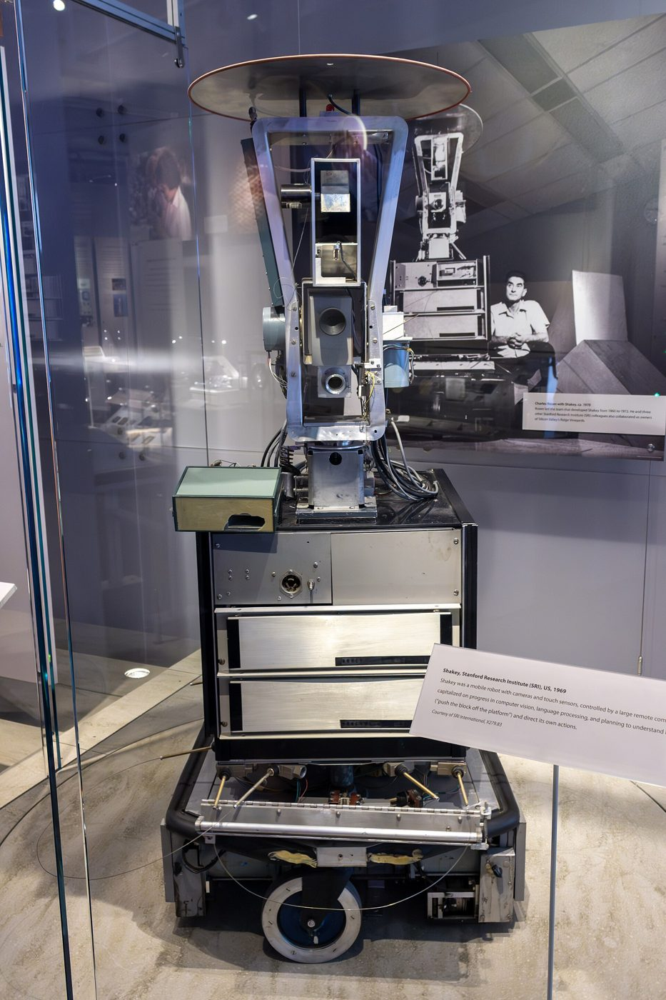

Drag nodes · Click neighbor to step · Keys 1–9 fire events · R resets
StateRED
OutputSTOP
Event—
Steps0
Fire EventDashed = no rule in current state
Sequence / Tape Runner
Custom Robot Vacuum
Drag nodes to arrange · Start arrow marks initial state · Double ring marks accepting state
States / Rules4 / 6
Unreachable0
Dead-Ends0
Table Filled30%
Detect "10" in a Bit Stream:
Moore (3 States)State: S0 · Out: 0
Mealy (2 States)State: M0 · Last Out: —
Tick
Bit
Moore Move
Moore Out
Mealy Move
Mealy Out
Moore vs. Mealy Trade-Off
Moore (1956): Output depends only on the current state, so detecting 10 needs an extra state (S10) to hold output 1.
Mealy (1955): Output sits on the transition arrow itself, firing 1 immediately on the M1 —[0]→ M0 edge using only 2 states.
The Finite Memory Wall
An FSM can check even vs. odd zeros across a billion bits using 2 states because it only remembers 1 bit of parity. What about balanced parentheses ((()))?
Sample: ((()))
To validate arbitrary nesting depth in Python or HTML, a finite set of states runs out—you must add a stack (Pushdown Automaton) or an infinite tape (Turing Machine).
What Is a Finite State Machine?
A finite state machine (FSM) gives a robot, circuit, or game character an exact answer to “What am I doing right now, and what can change it?” Formally, computer scientists write a deterministic FSM as a five-part tuple:
M = (Q, Σ, δ, q0, F)
Q (States) — a finite set of distinct modes or configurations the system can occupy Σ (Inputs / Alphabet) — events that arrive from sensors, timers, buttons, or data streams δ (Transitions) — rules mapping (current state, event) → next state q0 (Start state) — the single state the machine begins in at reset F (Accepting states) — optional double-ring goal states that signal a valid match or completion
The critical rule: a deterministic FSM is always in exactly one state at a time. Given the current state and an arriving event, at most one rule applies—never two states simultaneously.
Traffic Light Example
A traffic light cycles through three states on a timer event, with an emergency override back to RED:
State Graph ↔ Transition Table: Every state circle becomes a row and every event becomes a column. Reading a graph or reading a table describes the exact same rules.
ClassroomOS Original Diagram (CC0 1.0).
Draw the Robot’s Rules Before Writing Code
Sketch circles for states and label every arrow with the event that triggers it. Start with Clean → Avoid → Clean, then add a low-battery path to Dock and Charge.
Trace A: Robot Vacuum & Unhandled Edge Cases
Start in Clean. Trigger obstacle → moves to Avoid.
Trigger lowBattery while in Avoid → moves immediately to Dock.
Now trigger obstacle while in Dock: the default classroom model has no rule for (Dock, obstacle)! A real robot must decide: back off and re-seek, or wait?
Fork Robot Vacuum in Tab 2 (Build & Debug) and add the missing rule, then export the C++ switch code.
Trace B: 3-Digit Lock & Error Trap
Start in Locked. Entering correct three times visits Digit1 → Digit2 → Unlocked.
Entering wrong from any partial progress jumps straight to Error, wiping partial progress so a guesser cannot resume midway.
Only reset escapes Error back to Locked. That missing escape hatch is what our Analyzer calls a dead-end if omitted.
Take this same state-diagram habit into the Arduino bumper robot build, where a physical switch replaces the vacuum’s obstacle sensor and motors make each state visible, and compare Roomba’s robotics lineage.
Alan Turing (1912–1954) laid the foundation for computing in his 1936 paper “On Computable Numbers,” modeling a state machine paired with an unbounded read/write tape. In 1955–1956, two engineers adapted finite-state logic for practical switching circuits: George Mealy placed outputs on transition edges (reacting to state + input), while Edward Moore placed outputs inside states (reacting to state alone).
Model
Output Rule
Memory
Strength / Limit
Moore Machine (1956)
Depends only on current state
Finite states Q
Glitch-free synchronized outputs; often needs 1+ extra state
Mealy Machine (1955)
Depends on state + current input
Finite states Q
Fewer states, immediate response on input edge
Pushdown Automaton
Transition + stack top
Q + LIFO Stack
Parses arbitrarily nested parentheses, HTML, and JSON
Turing Machine (1936)
Read/write head + movement
Q + Infinite Tape
Solves any computable algorithm
What must an FSM remember, and what can it safely forget? To accept binary strings with an even number of 0s, the machine safely forgets the previous thousand bits and remembers only parity (Even or Odd). When a task requires remembering unbounded history—like matching 100 nested opening brackets—no finite set of states suffices without adding external memory.

Moore vs. Mealy & the Memory Wall: Putting outputs on arrows (Mealy) trims states; breaking past fixed memory requires a stack or tape.
ClassroomOS Original Diagram (CC0 1.0).

Shakey the Robot (SRI, 1966–1972): Early mobile robots combined low-level reactive state routines (avoiding bumps) with high-level planning algorithms like A*.
Photo: The wub · CC BY-SA 4.0 · Wikimedia Commons
Real-World State Machines
🚦
Traffic Control Systems
Intersection controllers guarantee opposing lanes never turn green simultaneously; inductive road sensors and pedestrian buttons trigger safe phase transitions.
🌐
TCP/IP Network Handshake
Every network socket walks through CLOSED → SYN_SENT → ESTABLISHED → FIN_WAIT → CLOSED as packets arrive or time out.
🎮
Game Character & Enemy AI
Player animation graphs and enemy NPCs switch cleanly between Patrol, Chase, Attack, and Flee without conflicting behaviors.
🤖
Autonomous Robot Behaviors
From 1960s industrial relays to modern room-cleaning vacuums, state machines isolate safety overrides and charging loops cleanly.
📱
UI Forms & App Flows
Checkout screens (Cart → Shipping → Processing → Receipt) use state machines so double-clicking Submit cannot charge twice.
🔎
Compilers & Regular Expressions
Every compiler lexer compiles regex token rules (numbers, keywords, strings) directly into fast deterministic finite automata.
Leave It to Roll-Oh (1940): An imaginative domestic robot introduces how real relays, microswitches, and automated finite state logic revolutionized factory and automotive control.
Practice & Self-Check
Score: 0 / 6
Easy1. A deterministic finite state machine can occupy two states at the exact same moment. True or False?
Hint: A standard deterministic FSM is always in exactly one active state at any instant.
Easy2. In the Traffic Light state machine, how many distinct states are needed for Red, Green, and Yellow?
Hint: Count RED, GREEN, and YELLOW.
Medium3. In the Vending Machine preset, which event moves the machine from HasMoney to Dispensing?
Hint: After inserting a coin, pressing a product button triggers the dispense transition.
Medium4. What is the minimum number of transitions required for a 3-state machine to cycle through every state once and return to its start state?
Hint: A → B → C → A uses one transition per hop.
Challenge5. A keypad door lock tracks a 3-digit passcode (using Start/Locked, after digit 1, after digit 2, Unlocked, plus one Error lockout state). How many states does this minimal FSM contain?
Hint: Check the Door Lock preset in Tab 1 and count Locked, Digit1, Digit2, Unlocked, and Error.
Challenge6. In Tab 3’s "10" sequence detector, why does the Mealy machine need only 2 states while the Moore machine needs 3 states?
Hint: In Tab 3, compare where output 1 appears when bit 0 arrives in state M1 vs. S1.
Turing, Alan M. (1936). “On Computable Numbers, with an Application to the Entscheidungsproblem.” Proceedings of the London Mathematical Society, Series 2, 42, 230–265.
Mealy, George H. (1955). “A Method for Synthesizing Sequential Circuits.” Bell System Technical Journal, 34(5), 1045–1079.
Moore, Edward F. (1956). “Gedanken-Experiments on Sequential Machines.” Automata Studies (Annals of Mathematics Studies No. 34), Princeton University Press, 129–153.